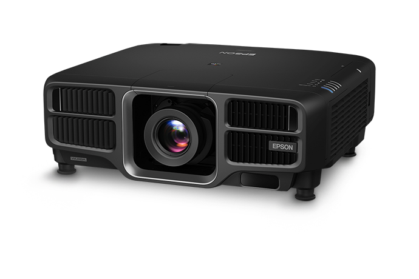
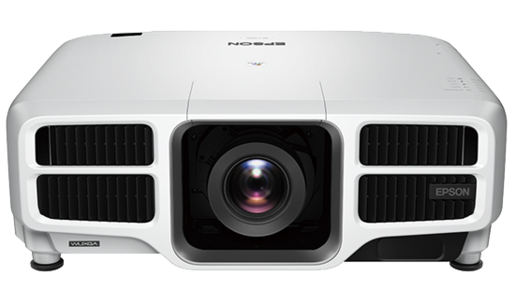

PROJEÇÃO MAPEADA
A projeção mapeada cada vez mais ganha destaque na mídia, pois é uma das alternativas mais atrativas para incrementar seu evento. Trata-se de uma técnica utilizada para projetar imagens em uma estrutura tridimensional, a qual é previamente mapeada por algum software. Enquanto a projeção plana não permite essa manipulação da luz, a projeção mapeada — ou video mapping, como também é conhecida — permite que você “direcione” a luz exatamente para a região que receberá o conteúdo visual, fazendo parecer que o vídeo criado se encaixa na estrutura.
O que é Projeção Mapeada?
Não importa o tamanho ou a forma da estrutura, se você tiver um projetor adequado, um computador e um software de projeção mapeada, você poderá fazer com que ela se ilumine e fique cheia de vida. A projeção mapeada é uma performance muito intensa e envolvente criada pela interação de conteúdo de vídeo (2D ou 3D) projetado nos mais variados tipos de superfícies: de um prédio histórico ou industrial (projeções monumentais) a um automóvel (mapeamento de carro), até a uma pequena garrafa ou um relógio (micromapeamento). O fundamental é que o conteúdo projetado seja estudado especificamente para interagir com a geometria da superfície escolhida. E é aí que entra o jogo 3D! Para você ter uma noção do quão poderosa é a técnica da projeção mapeada, dê uma olhadinha neste vídeo apresentando o Porsche Carrera 4S (lançado em 2012). A realidade é incrível, mas o protótipo ficou parada no showroom o tempo todo. Todas os efeitos foram causados pela técnica da projeção mapeada. A partir dessa base, as projeções também podem se tornar interativas, dando ao público a capacidade de interagir com o conteúdo projetado. Ou ainda poder interagir com atores, atletas ou objetos em movimento, criando efeitos cênicos incríveis.
Porque Fazer?
O fator tendência contribui muito para que a projeção mapeada esteja presente em vários eventos, sejam eles corporativos ou sociais. Mas a sua recorrência é justificada por outros motivos. Além da capacidade de customização e automação — características que também podem ser encontrada em painéis de LED, por exemplo —, a projeção mapeada possui um nível de adaptação ao qual nenhum outro equipamento de iluminação consegue chegar. Graças a isso, a projeção mapeada pode criar efeitos visuais surreais, capazes de proporcionar uma experiência única para o público do seu evento. Além de, claro, poder transformar qualquer estrutura em uma superfície animada ou interativa.
Nossos projetores
- PROJETOR EPSON
- PROJETOR EPSON 